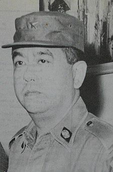

Basuki returned to KODAM VII/Brawijaya in 1960, serving as chief of staff before finally becoming
regional commanding general in 1962.[3]
G30S and murder of
generals
By 1965, there was a great deal of political tension in Indonesia, especially between the Army
and
the Communist
Party
of Indonesia (PKI). The PKI, which had slowly been slowly gaining a footing in Indonesian
politics, was now set to become the most powerful political party because of their association
with
President Sukarno. In September 1965, Basuki grew wary
of
communist activities in

East Java and went to Jakarta to report his observations to the Commander of
the Army, Ahmad Yani.[4] They met on the evening of 30 September when
Basuki met with Yani and reported of the goings on in his province. Yani complimented Basuki on the
report and wanted him to accompany him to his meeting with the president the following morning to
relay his story of Communist activities.[5]
The next morning on 1 October, Basuki was contacted by the Army Headquarters and notified of the kidnapping of the generals,
including Yani, whom he had expected to be back in the palace as promised but ended up dead in his
house. Hearing this, Basuki together with an aide went in a car and took a drive around the city to
check what was going on. As he was driving, Basuki noticed his troops from East Java, the 530th
Infantry Battalion guarding the Presidential Palace and was even more surprised that they were not
wearing any divisional patches nor rank insignia.[6] After being advised against approaching them by his aide, Basuki
drove back to his accommodation where he was informed that he was needed at the Kostrad headquarters.
Basuki went to the Kostrad headquarters to find that the commander of Kostrad, Major General Suharto, had decided to assume the leadership of the Army
and take control of the situation. From Suharto, Basuki found out that a movement calling themselves
the 30 September Movement had used the troops to occupy strategic points in Jakarta. Suharto then told
Basuki that he needed him to negotiate the troops into surrendering before 6 pm or else he would
use force. This, Basuki conveyed to the 530th Battalion who treated him with the utmost respect.
Basuki was successful and by 4 pm, the 530th Battalion, in the presence of Kostrad forces,
surrendered.[7]
During the day, the G30S Movement made an announcement of a Revolutionary Council on radio. Among the
names listed was that of Basuki. This was not an isolated incident as many anti-Communist general
officers such as Umar
Wirahadikusumah (then commander, Kodam
V/Jaya) and Amir Machmud were also listed
on this council. Basuki was quick to deny the appointment.
Also during the day and unbeknownst to Basuki a meeting was held in Halim Perdanakusuma Airport between Sukarno,
Commander of the Air Force AVM Omar Dhani, Commander
of the Navy Rear Admiral RE
Martadinata, and Chief of the National Police General Sucipto Judodiharjo to appoint a new Army
Commander. Although it was Major General Pranoto Reksosamudra who would be appointed Commander of the
Army to fill the by now vacant post, Basuki's name was briefly considered. It was quickly dismissed by
Sukarno who joked that Basuki would always be taken ill when the occasion needed him.
After 1 October, all the fingers pointed the blame at PKI and all over Indonesia, especially in Java,
movements began to be formed with the aim of crushing PKI. For his part, Basuki returned to East Java
to supervise the anti-PKI movements there.
On 16 October 1965, a rally was held in Surabaya during which a United Action Command consisting of
various political parties was formed.
Although he had encouraged the political parties to join the United Action Command, Basuki did not
commit his troops into cracking down on PKI as readily as all the other commanders did. During the
first weeks of a nationwide crackdown on PKI, nothing happened in the East Java capital of Surabaya. This lack of commitment together with the
listing of Basuki's name as part of the Revolutionary Council caused many to suspect that Basuki was a
PKI sympathizer. It needed some force from his staff before Basuki froze pro-PKI activities in
Surabaya and East Java[8]
In November 1965, Basuki was transferred to Jakarta and became a staff member for Suharto who was now
the Commander of the Army, taking on the position of deputy chief of staff for finance and civil
relations. Basuki also become active as a member of the Social-Political Committee (Panitia
Sospol), the Army political think-tank which Suharto set up after he had become Commander of the
Army.[9]
In February 1966, in a Cabinet Reshuffle, Basuki was named Minister of Veterans' Affairs. In this
duty he was tasked to ensure veterans' concerns would be addressed in light of the worsening economic
situation.
Supersemar
On 11 March 1966, Basuki attended a cabinet meeting at the Merdeka Palace, the first since Sukarno
reshuffled the cabinet at the end of February. The meeting had not been underway long before Sukarno,
after receiving a note from the commander of his bodyguards, suddenly left the room. When the meeting
was over, Basuki and the Minister of Industry, Mohammad Jusuf, went outside the palace complex to join Amirmachmud, by now the
commander of KODAM V/Jaya replacing then Kostrad commanding general Umar Wirahadikusumah. Basuki was
then updated on what had happened and was informed that Sukarno had left for Bogor by helicopter because it was not secure in Jakarta.
Jusuf suggested that the three of them go to Bogor to provide moral support for Sukarno. The other
two generals agreed and together, the three left to Bogor after asking for Suharto's permission.
According to Amirmachmud, Suharto asked the three generals to tell Sukarno of his readiness to restore
security, should the president order it.
At Bogor, the three met with Sukarno who was unhappy with the security and with Amirmachmud's
insistence that everything was secure. Sukarno then began discussing options with the three Generals
before finally Sukarno then began discussing options with Basuki, Jusuf, and Amirmachmud before
finally asking them how he can take care of the situation. Basuki and Jusuf were silent, but
Amirmachmud suggested that Sukarno give Suharto some powers and govern Indonesia with him so that
everything could be secured. The meeting then disbanded as Sukarno began preparing a Presidential
Decree.
It was dusk when the Decree that would become Supersemar was finally prepared and awaiting Sukarno's
signature. Sukarno had some last minute doubts but Jusuf, together with the two Generals and Sukarno's
inner circle in the Cabinet who had also made the trip to Bogor encouraged him to sign. Sukarno
finally signed the letter. As the most senior out of the three Generals, Basuki was entrusted with the
letter and ordered to pass it on to Suharto. That night, the three Generals immediately went to the
Kostrad Headquarters and Basuki handed the letter to Suharto.
There was controversy over Basuki's role in Supersemar. One account states that four generals had
gone to Bogor, the fourth general being Maraden Panggabean. This account stated that together with
Panggabean, Basuki held Sukarno at gun point and forced him to sign a pre-prepared Supersemar which
Jusuf had carried with him inside a pink folder[10]
On 13 March, Sukarno summoned Basuki, Jusuf, and Amirmachmud. Sukarno was angry that Suharto had
banned the PKI and told the three Generals that Supersemar did not contain such instructions. Sukarno
then ordered that a letter be produced to clarify the contents of Supersemar but nothing ever came up
apart from the copies that former Cuban Ambassador, AM Hanafi collected.
Supersemar
The handing of Supersemar gave Suharto de facto executive powers, and he soon began establishing a
Cabinet more favorable to him. Basuki served as Minister of Home Affairs, starting with Suharto's
first Cabinet in March 1966 to the one which he named in June 1968 when he was officially the
president.
New Order
The handing of Supersemar gave Suharto de facto executive powers, and he soon began establishing a
Cabinet more favorable to him. Basuki served as Minister of Home Affairs, starting with Suharto's
first Cabinet in March 1966 to the one which he named in June 1968 when he was officially the
president.
Death
Basuki died on 8 January 1969 while still holding his office as Minister of Home Affairs. He was
replaced by Amir Machmud in this position.[11]